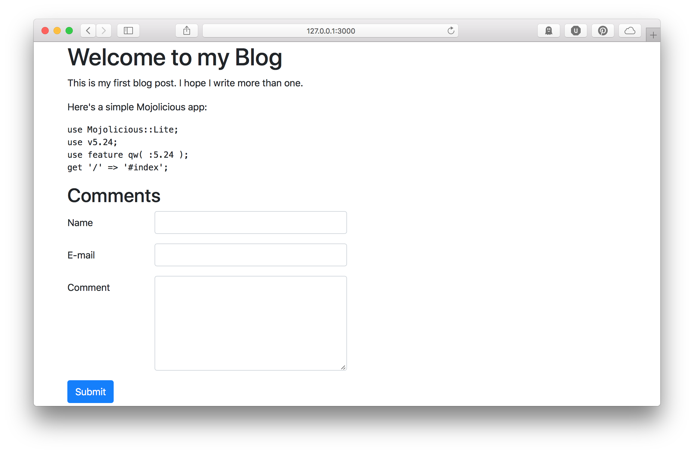
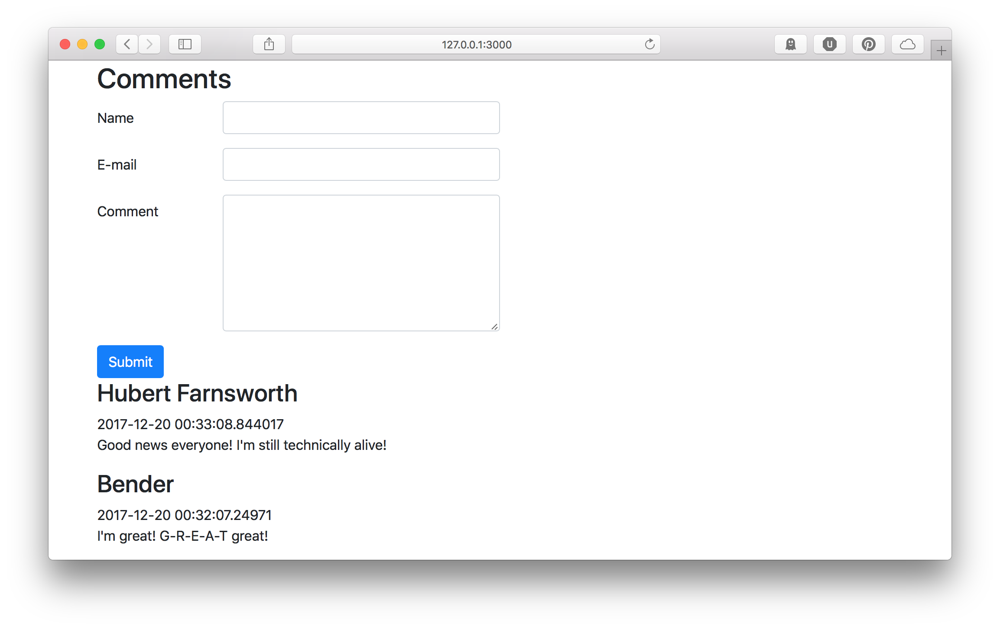
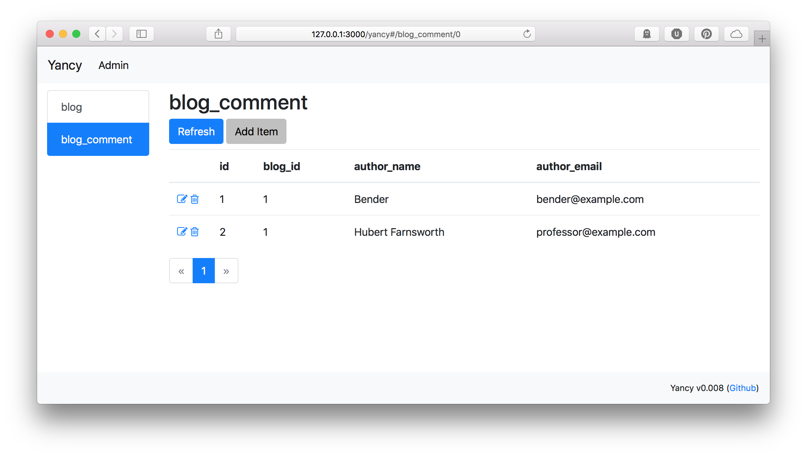

Yancy Starts a Conversation
Continuing on from [our last post which created a simple blog app]. A blog without comments is just a website. So, let's add a way for users to interact with our content.
First, as before, we need a database table. A comment on our blog will need an ID, the date/time it was created, the author's name and e-mail address, and the content of their comment. We will also need to store the ID of the blog post the user is commenting on.
We add the SQL that builds this table as a new migration. When our app starts up, Mojo::Pg will look to see what version of the database schema we have. If necessary, it will upgrade our database by running the migration SQL snippet.
@@ migrations
-- 1 up
CREATE TABLE blog (
id SERIAL PRIMARY KEY,
title VARCHAR NOT NULL,
created TIMESTAMP NOT NULL DEFAULT NOW(),
markdown TEXT NOT NULL,
html TEXT NOT NULL
);
-- 1 down
DROP TABLE blog;
-- 2 up
CREATE TABLE blog_comment (
id SERIAL PRIMARY KEY,
blog_id INTEGER REFERENCES blog ON DELETE CASCADE,
author_name VARCHAR NOT NULL,
author_email VARCHAR NOT NULL,
content TEXT NOT NULL
);
-- 2 down
DROP TABLE blog_comment;
Now that we have a place to store them, we should tell Yancy about our new collection so we can manage it. This won't be the way that users add comments to our site, but it will be the way we edit and delete comments from our site.
use Mojolicious::Lite;
plugin Yancy => {
backend => 'pg://localhost/blog',
collections => {
blog_comment => {
'x-list-columns' => [qw( id blog_id author_name author_email )],
required => [qw( author_name author_email content )],
properties => {
id => { type => 'integer', readOnly => 1 },
blog_id => { type => 'integer' },
author_name => { type => 'string' },
author_email => { type => 'string' },
content => { type => 'string' },
},
},
},
};
With our blog_comment collection, we're also using the
x-list-columns value to set which columns are shown in Yancy's list
view. This way we can easily see the author information while we're
perusing the list.
Next, we need a way for users to add new comments to a blog post. For this, we'll need a form, and a route that accepts the form contents and adds the comment to the database.
First, the route. The route will accept three form parameters:
author_name, author_email, and content. Then we need to set the
correct blog_id. With the data ready, we can use the yancy.create
helper
to write the new comment. This helper will validate our data according
to our configuration and throw an exception if it's invalid. Finally,
we can redirect the user back to the front page of the blog.
post '/blog/:id/comment' => sub {
my ( $c ) = @_;
# Create the new comment
my %item;
for my $field (qw( author_name author_email content )) {
$item{ $field } = $c->param( $field );
}
$item{ blog_id } = $c->stash( 'id' );
eval { $c->yancy->create( blog_comment => \%item ) };
if ( $@ ) {
return $c->render(
status => 400,
text => "Error adding comment: $@",
);
}
# Back to the blog
$c->res->headers->location( '/' );
return $c->rendered( status => 302 );
};
Now we need a form. We'll use Bootstrap to make it look nice.
% for my $post ( @{ stash 'posts' } ) {
<%== $post->{html} %>
<h2>Comments</h2>
<form class="form" method="post" action="/blog/<%= $post->{id} %>/comment">
<div class="form-group row">
<label class="col-form-label col-2">Name</label>
<input name="author_name" class="form-control col-4" />
</div>
<div class="form-group row">
<label class="col-form-label col-2">E-mail</label>
<input name="author_email" class="form-control col-4" />
</div>
<div class="form-group row">
<label class="col-form-label col-2">Comment</label>
<textarea name="content" rows="6" class="form-control col-4"></textarea>
</div>
<button class="btn btn-primary">Submit</button>
</form>
% }

Finally, we need to display the comments with our posts. We will have to
rewrite our main / route to add the comments to the post data, like
so:
get '/' => sub {
my ( $c ) = @_;
# Get posts, latest post first
my @posts = $c->yancy->list(
blog => {},
{ order_by => { -desc => 'created' } },
);
for my $post ( @posts ) {
# Add comments to the post, latest comment first
$post->{comments} = [
$c->yancy->list(
blog_comment => { blog_id => $post->{id} },
{ order_by => { -desc => 'created' } },
)
];
}
return $c->render( 'index', posts => \@posts );
};
And then we can display our posts in our template:
% for my $comment ( @{ $post->{comments} } ) {
<h3>
<%= $comment->{author_name} %>
</h3>
<date><%= $comment->{created} %></date>
<p style="white-space: pre-line"><%= $comment->{content} %></p>
% }

Once we have some comments, we can manage them using Yancy.

Here's the whole code for our blog with comments. Mojolicious and makes it easy to build a content-based website, and Yancy makes it easy to manage.